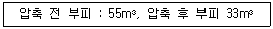
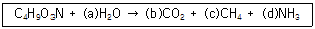
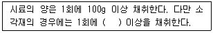
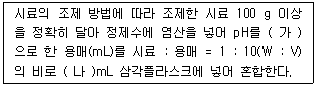
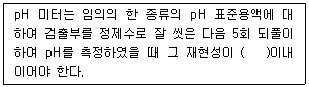
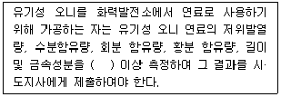
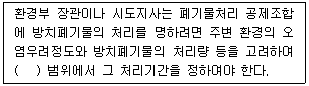
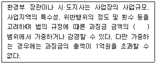

폐기물처리산업기사 (2014-03-02 기출문제)
1과목: 폐기물개론
1. 함수율이 80%이며 건조고형물의 비중이 1.42인 슬러지의 비중은? (단, 물의 비중은 1.0으로 한다.)
- 1.021
- 1.063
- 1.127
- 1.174
(정답률: 73%)

2. 다음의 폐기물의 성상분석의 절차 중 가장 먼저 시행하는 것은?
- 분류
- 물리적 조성
- 화학적 조성분석
- 발열량측정
(정답률: 87%)
3. 적환장의 일반적인 설치 필요조건과 가장 거리가 먼 것은?
- 작은 용량의 수집차량을 사용할 때
- 슬러지 수송이나 공기수송 방식을 사용할 때
- 불법 투기와 다량의 어질러진 쓰레기들이 발생할 때
- 고밀도 거주지역이 존재할 때
(정답률: 90%)
4. 폐기물의 부피감소를 위하여 압축을 실시하였다. 다음 폐기물의 부피감소율은?

- 30%
- 40%
- 50%
- 60%
(정답률: 74%)
5. 5m3의 용적을 갖는 쓰레기를 압축하였더니 3m3으로 감소되었다. 이 때 압축비(CR)는?
- 0.43
- 0.60
- 1.67
- 2.50
(정답률: 96%)
6. 70%의 함수율을 가진 폐기물을 탈수시켜 40%로 감량시킨다면 폐기물은 초기 무게에서 몇 % 정도가 감량되는가? (단, 폐기물의 비중은 1.0 으로 가정한다.)
- 45%
- 50%
- 55%
- 60%
(정답률: 73%)
7. 전단파쇄기에 관한 설명으로 옳지 않은 것은?
- 대체로 충격파쇄기에 비해 파쇄속도가 빠르다.
- 이물질의 혼입에 대하여 약하다.
- 파쇄물의 크기를 고르게 할 수 있다.
- 주로 목재류, 플라스틱류 및 종이류를 파쇄 하는데 이용된다.
(정답률: 86%)
8. 소각로에서 발생되는 재의 무게 감량비가 60%, 부피 감소비가 90%라 할 때 소각전 폐기물의 밀도가 0.55t/m3이라면, 소각재의 밀도는?
- 1.0t/m3
- 1.2t/m3
- 2.0t/m3
- 2.2t/m3
(정답률: 67%)
9. 쓰레기의 발생량 조사 방법인 물질수지법에 관한 설명으로 옳지 않은 것은?
- 주로 산업폐기물 발생량을 추산할 때 이용 된다.
- 비용이 저렴하고 정확한 조사가 가능하여 일반적으로 많이 활용된다.
- 조사하고자 하는 계의 경계를 정확하게 설정하여야 한다.
- 물질수지를 세울 수 있는 상세한 데이터가 있는 경우에 가능하다.
(정답률: 95%)
10. 어떤 쓰레기의 입도를 분석한 결과 입도누적곡선상의 10%, 40%, 60%, 90%의 입경이 각각 1, 5, 10, 20mm 이었다고 한다면 유효 입경과 균등계수는 각각 얼마인가?
- 5.0mm, 2
- 5.0mm, 4
- 1.0mm, 8
- 1.0mm, 10
(정답률: 74%)
11. 폐기물발생량이 0.85kg/인·일 인 지역의 인구가 10만이고, 적재량 8톤 트럭으로 이 폐기물을 모두 운반하고 있다면 1일 필요한 차량 수는? (단, 트럭은 1일 1회 운행하며 기타 조건은 고려하지 않음)
- 9
- 11
- 13
- 15
(정답률: 80%)
12. 청소상태를 평가하는 평가법 중 서비스를 받는 시민들의 만족도를 설문조사하여 나타내어지는 사용자 만족도 지수는?
- CEI
- USI
- PPI
- CPI
(정답률: 96%)
13. 쓰레기 발생량이 커지는 이유와 가장 거리가 먼 것은?
- 도시의 규모가 커진다.
- 수집빈도가 낮아진다.
- 쓰레기통이 커진다.
- 생활수준이 높아진다.
(정답률: 100%)
14. CH3OH이 혐기성 반응으로 완전히 분해되었다. 발생한 CH4의 양이 2.0L 였다면 투입한 CH3OH의 양(g)은? (단, 표준상태 기준, 최종생성물은 메탄, 이산화탄소, 물 이다.)
- 1.8
- 2.8
- 3.8
- 4.7
(정답률: 50%)
15. 어느 도시의 1년간 쓰레기 수거량은 2,000,000 ton이었고, 수거대상 인구는 2,000,000인 이었으며, 수거인부는 3,500명이었다. 단위 톤당의 쓰레기 수거에 소요되는 맨 아워(man-hour)는 얼마인가? (단, 수거인부의 작업시간은 하루 8시간이고, 1년 작업일수는 300일이다.)
- 2.6 man-hour/ton
- 3.4 man-hour/ton
- 4.2 man-hour/ton
- 5.1 man-hour/ton
(정답률: 79%)
16. 50ton/hr 규모의 시설에서 평균크기가 30.5cm인 혼합된 도시폐기물을 최종크기 5.1cm 로 파쇄하기 위해 필요한 동력은? (단, 킥의 법칙 적용, C=13.6, 에너지단위 : kW·hr/ton)
- 약 1020kW
- 약 1120kW
- 약 1220kW
- 약 1320kW
(정답률: 73%)
17. 적재량 15m3인 수거차량으로 년 간 10만대분의 쓰레기가 인구 100만명인 도시에서 발생하고 있다. 이때 쓰레기의 밀도가 750kg/m3라면 1인 1일 발생하는 무게는 몇 kg인가? (단, 1년=365일, 적재계수 1.0이고, 인구증가율 등은 고려하지 않는다.)
- 약 3.082kg
- 약 3.382kg
- 약 3.582kg
- 약 3.882kg
(정답률: 78%)
18. 어느 도시폐기물 중 비가연성분이 40%(W/W%) 이다. 밀도가 300kg/m3인 폐기물 10m3 중 가연성물질의 양은? (단, 비가연성분과 가연성분으로 구분 기준)
- 1.2 ton
- 1.4 ton
- 1.6 ton
- 1.8 ton
(정답률: 58%)
19. 폐기물을 수거하여 분석한 결과 함수율이 40%이고, 총 휘발성 고형물은 총고형물의 80%, 유기탄소량은 총 고형물의 90% 이었다. 또한 총질소량은 총 고형물의 2%라 할 때 이 폐기물의 C/N(유기탄소량/총질소량)은? (단, 비중은 1.0기준)
- 26
- 36
- 46
- 56
(정답률: 43%)
20. 인구 1,000,000명이고, 1인 1일 쓰레기 배출량은 1.4kg/인·일이라 한다. 쓰레기의 밀도가 650kg/m3 라고 하면 적재량은 12m3 인 트럭(1대 기준)으로 1일 동안 배출된 쓰레기 전량을 운반하기 위한 횟수는?
- 150회
- 160회
- 170회
- 180회
(정답률: 64%)
2과목: 폐기물처리기술
21. 슬러지 100m3의 함수율이 98%이다. 탈수 후 슬러지의 체적을 1/10로 하면 슬러지 함수율은? (단, 모든 슬러지의 비중은 1임)
- 20%
- 40%
- 60%
- 80%
(정답률: 69%)
22. 폐기물 매립지 표면적이 50,000m2 이며 침출수량은 년 간 강우량의 10% 라면 1년간 침출수에 의한 BOD 누출량은? (단, 년간 평균 강우량은 1,300mm, 침출수 BOD 8,000mg/L이다.)
- 40,000 kg
- 52,000 kg
- 400,000 kg
- 468,000 kg
(정답률: 67%)
23. 합성차수막 중 PVC 에 관한 설명으로 틀린 것은?
- 작업이 용이하다.
- 접합이 용이하고 가격이 저렴하다.
- 자외선, 오존, 기후에 약하다.
- 대부분의 유기화학물질에 강하다.
(정답률: 100%)
24. 매립된 지 10년 이상인 매립지에서 발생되는 침출수를 처리하기 위한 공정으로 효율성이 가장 양호한 것은? (단, 침출수 특성 : COD/TOC ＜ 2.0, BOD/COD ＜ 0.1, COD ＜ 500ppm)
- 역삼투
- 화학적 침전
- 오존처리
- 생물학적 처리
(정답률: 75%)
25. 고화처리법 중 열가소성 플라스틱법의 장단점으로 틀린 것은?
- 고화처리된 폐기물 성분을 훗날 회수하여 재활용 가능하다.
- 크고 복잡한 장치와 숙련기술을 요한다.
- 혼합율(MR)이 비교적 낮다.
- 고온분해되는 물질에는 사용할 수 없다.
(정답률: 87%)
26. 1일 폐기물 발생량이 100 ton인 폐기물을 깊이 3m인 도랑식으로 매립하고자 한다. 발생 폐기물의 밀도는 400kg/m3, 매립에 따른 부피감소율은 20%일 경우, 1년간 필요한 매립지의 면적은 몇 m2 인가? (단, 기타조건은 고려하지 않음)
- 약 16,083
- 약 24,333
- 약 30,417
- 약 91,250
(정답률: 67%)
27. 유기물(포도당, C6H12O6) 1kg을 혐기성 소화시킬 때 이론적으로 발생되는 메탄량(kg)은?
- 약 0.09
- 약 0.27
- 약 0.73
- 약 0.93
(정답률: 83%)
28. 고형분 30%인 주방찌꺼기 10톤이 있다. 소각을 위하여 함수율이 50% 되게 건조시켰다면 이때의 무게는? (단, 비중은 1.0 기준)
- 2톤
- 3톤
- 6톤
- 8톤
(정답률: 91%)
29. 열분해공정이 소각에 비해 갖는 장점이 아닌 것은?
- 황분, 중금속이 재(ash) 중에 고정되는 비율이 작다.
- 환원성 분위기가 유지되므로 Cr+3가 Cr+6로 변화되기 어렵다.
- 배기 가스량이 적다.
- NOx 발생량이 적다.
(정답률: 37%)
30. C4H9O3N으로 표현되는 유기물 1몰이 혐기성 상태에서 다음 식과 같이 분해 될 때 발생하는 이산화탄소의 양은?

- 1몰
- 2몰
- 3몰
- 4몰
(정답률: 72%)
31. 어느 분뇨처리장에서 20 kL/일의 분뇨를 처리하며 여기에서 발생 하는 가스의 양은 투입 분뇨량의 8배라고 한다면 이 중 CH4가스에 의해 생성되는 열량은? (단, 발생가스 중 CH4가스가 70%를 차지하며, 열량은 6000 kcal/m3-CH4이다.)
- 84,000Kcal/일
- 120,000Kcal/일
- 672,000Kcal/일
- 960,000Kcal/일
(정답률: 79%)
32. 메탄올(CH3OH) 8 kg을 완전 연소하는데 필요한 이론 공기량(Sm3) 은? (단, 표준상태 기준)
- 35
- 40
- 45
- 50
(정답률: 80%)
33. 전처리에서의 SS 제거율은 60%, 1차 처리에서 SS 제거율이 90% 일 때 방류수 수질기준 이내로 처리하기 위한 2차 처리 최소효율은? (단, 분뇨 SS : 20,000mg/L, SS 방류수 수질기준 : 60mg/L)
- 92.5%
- 94.5%
- 96.5%
- 98.5%
(정답률: 40%)
34. 1일 20톤 폐기물을 소각처리하기 위한 로의 용적(m3)은? (단, 저위발열량이 700kcal/kg, 노내 열부하는 20,000 kcal/m3·hr, 1일 가동시간 14시간)
- 25
- 30
- 45
- 50
(정답률: 71%)
35. 소각로 중 다단로 방식의 장점으로 틀린 것은?
- 체류시간이 길어 분진 발생율이 낮다.
- 수분함량이 높은 폐기물의 연소가 가능하다.
- 휘발성이 적은 폐기물 연소에 유리하다.
- 많은 연소영역이 있으므로 연소효율을 높일 수 있다.
(정답률: 77%)
36. 호기성처리로 200 kL/d 분뇨를 처리할 경우 처리장에 필요한 송풍량은? (단, BOD 20,000ppm, 제거율 80%, 제거 BOD당 필요송풍량 100m3/BOD kg, 분뇨비중 1.0, 24시간 연속 가동 기준)
- 약 3,333 m3/hr
- 약 13,333 m3/hr
- 약 320,000 m3/hr
- 약 400,000 m3/hr
(정답률: 79%)
37. 매립시 표면차수막(연직차수막과 비교)에 관한 설명으로 가장 거리가 먼 것은?
- 지하수 집배수시설이 필요하다.
- 경제성이 있어서 차수막 단위면적당 공사비는 고가이나 총공사비는 싸다.
- 보수 가능성면에 있어서는 매립 전에는 용이하나 매립 후에는 어렵다.
- 차수성 확인에 있어서는 시공시에는 확인되지만 매립 후에는 곤란한다.
(정답률: 90%)
38. 분뇨처리장의 방류수량이 1000m3/day 일 때 15분간 염소 소독을 할 경우 소독조의 크기는?
- 약 16.5m3
- 약 13.5m3
- 약 10.5m3
- 약 8.5m3
(정답률: 79%)
39. 밀도가 1.0 t/m3인 지정폐기물 20m3을 시멘트고화처리 방법에 의해 고화처리하여 매립하고자 한다. 고화제인 시멘트를 첨가하였다면 고화제의 혼합율(MR)은? (단, 고화제 밀도는 1 t/m3, 고화제 투입량은 폐기물 1m3당 200kg)
- 0.⑤
- 0.10
- 0.15
- 0.20
(정답률: 54%)
40. 유해폐기물 고화처리시 흔히 사용하는 지표인 혼합율(MR)은 고화제 첨가량과 폐기물 양의 중량비로 정의된다. 고화처리전 폐기물의 밀도가 1.0g/cm3, 고화처리된 폐기물의 밀도가 1.3g/cm3이라면 혼합율(MR)이 0.755일 때 고화처리된 폐기물의 부피변화율(VCF)은?
- 1.95
- 1.56
- 1.35
- 1.115
(정답률: 53%)
3과목: 폐기물 공정시험 기준(방법)
41. 함수율이 90%인 슬러지를 용출시험하여 구리의 농도를 측정하니 1.0 mg/L로 나타났다. 수분함량을 보정한 용출시험결과치는?
- 0.6 mg/L
- 0.9 mg/L
- 1.1 mg/
- 1.5 mg/L
(정답률: 39%)
42. 크롬(자외선/가시선 분광법) 측정시 첨가한 표준물질의 농도에 대한 측정 평균값의 상대 백분율로서 나타내는 정확도 값으로 옳은 것은?
- 90 ~ 110% 이내
- 85 ~ 115% 이내
- 80 ~ 120% 이내
- 75 ~ 125% 이내
(정답률: 42%)
43. 다음은 폐기물 시료의 채취에 관한 내용이다. ( ) 안에 옳은 내용은?

- 200g
- 300g
- 500g
- 1000g
(정답률: 86%)
44. 대상폐기물의 양이 2,000톤인 경우 채취시료의 최소수는?
- 24
- 36
- 50
- 60
(정답률: 75%)
45. 원자흡수분광광도법을 이용한 비소 측정에 사용되는 불꽃으로 가장 옳은 것은?
- 아르곤 - 수소
- 아르곤 - 질소
- 질소 - 수소
- 질소 - 공기
(정답률: 53%)
46. 자외선/가시선 분광법에 의한 카드뮴 분석방법에 관한 설명으로 옳지 않은 것은?
- 황갈색의 카드뮴착염을 사염화탄소로 추출하여 그 흡광도를 480nm에서 측정하는 방법이다.
- 카드뮴의 정량범위는 0.001~0.03 mg이고, 정량한계는 0.001mg이다.
- 시료중 다량의 철과 망간을 함유하는 경우 디티존에 의한 카드뮴 추출이 불완전하다.
- 시료에 다량의 비스무트(Bi)가 공존하면 시안화칼륨 용액으로 수회 씻어도 무색이 되지 않는다.
(정답률: 74%)
47. 자외선/가시선 분광법을 이용한 시안분석방법에 관한 설명으로 옳지 않은 것은?
- 포집된 시안이온을 중화하고 클로라민T와 피리딘 피라졸론 혼합액을 넣어 적자색 510nm에서 측정한다.
- 시료를 pH 2이하의 산성으로 조절한 후 에틸렌다이아민테트라아세트산이나트륨을 넣고 가열 증류한다.
- 잔류염소가 함유된 시료는 잔류염소 20mg 당 L-아스코빈산(10W/V%) 0.6mL를 넣어 제거한다.
- 황화합물이 함유된 시료는 아세트산아연용액(10W/V%) 2mL를 넣어 제거한다.
(정답률: 54%)
48. 폐기물 중 시안을 측정(이온적극법)할 때 시료채취 및 관리에 관한 내용으로 옳은 것은?
- 시료는 수산화나트륨용액을 가하여 pH 10 이상으로 조절하여 냉암소에서 보관한다. 최대 보관시간은 8시간이며 가능한 한 즉시 실험한다.
- 시료는 수산화나트륨용액을 가하여 pH 10 이상으로 조절하여 냉암소에서 보관한다. 최대 보관시간은 24시간이며 가능한 한 즉시 실험한다.
- 시료는 수산화나트륨용액을 가하여 pH 12 이상으로 조절하여 냉암소에서 보관한다. 최대 보관시간은 8시간이며 가능한 한 즉시 실험한다.
- 시료는 수산화나트륨용액을 가하여 pH 12 이상으로 조절하여 냉암소에서 보관한다. 최대 보관시간은 24시간이며 가능한 한 즉시 실험한다.
(정답률: 74%)
49. 용출 조작시 진탕 회수 기준으로 옳은 것은? (단, 상온, 상압 조건, 진폭은 4 ~ 5cm)
- 매분 당 약 200회
- 매분 당 약 300회
- 매분 당 약 400회
- 매분 당 약 500회
(정답률: 89%)
50. 총칙에서 규정하고 있는 사항 중 옳은 것은?
- 진공이라 함은 15mmH2O 이하를 말한다,
- 실온은 15 ~ 25℃이고 상온은 1 ~ 35℃로 한다.
- 찬 곳은 따로 규정이 없는 한 0 ~ 15℃의 곳을 말한다.
- 제반시험조작은 따로 규정이 없는 한 실온에서 실시한다.
(정답률: 83%)
51. 폐기물 시료 채취시 무색경질 유리병을 사용하여야 하는 측정 대상 항목이 아닌 것은?
- 유기인
- 휘발성 저급 염소화 탄화수소류
- PCBs
- 수은
(정답률: 50%)
52. 자외선/가시선 분광법에 의하여 구리를 정량하는 방법에 관한 설명이 틀린 것은?
- 정량한계는 0.002mg 이다.
- 흡광도는 440nm에서 측정한다.
- 비스무트가 구리의 양보다 2배 이상 존재하는 경우에는 황색을 나타내어 방해한다.
- 시료 중 시안화합물이 존재하는 경우 과망간산칼륨(10w/v%) 용액으로 완전 산화시켜야 한다.
(정답률: 47%)
53. 고형물 함량이 50%, 강열감량이 80%인 폐기물의 유기물 함량(%)은?
- 30
- 40
- 50
- 60
(정답률: 43%)
54. 다음 중 pH 표준액 중 pH 4에 가장 근접하는 용액은?
- 수산염 표준액
- 프탈산염 표준액
- 인산염 표준액
- 붕산염 표준액
(정답률: 65%)
55. 폐기물공정시험기준(방법) 중 용어의 정의가 틀린 것은?
- 반고상폐기물은 고형물의 함량 5% 이상 15% 미만인 것을 말한다.
- 방울수는 20℃에서 정제수 20방울을 적하할 때, 그 부피가 약 1mL 되는 것을 말한다.
- “강압 또는 진공”은 따로 규정이 없는 한 15mmHg 이하를 뜻한다.
- “항량으로 될 때까지 건조한다”는 같은 조건에서 1시간 더 건조 할 때 전후 무게의 차가 g 당 0.1 mg 이하일 때를 말한다.
(정답률: 86%)
56. 다음은 용출시험을 위한 시료 용액의 조제에 관한 내용이다. ( )에 옳은 내용은?

- 가 : 5.3 ~ 6.8, 나 : 1,000
- 가 : 5.3 ~ 6.8, 나 : 2,000
- 가 : 5.8 ~ 6.3, 나 : 1,000
- 가 : 5.8 ~ 6.3, 나 : 2,000
(정답률: 53%)
57. 다음은 유리전극법에 의한 pH 측정 시정밀도에 관한 설명이다. ( )안에 알맞은 것은?

- ± 0.01
- ± 0.⑤
- ± 0.1
- ± 0.5
(정답률: 89%)
58. 자외선/가시선 분광법에 의해 크롬을 정량하기 위해서는 크롬이온 전체를 6가크롬으로 변화시켜야 하는데 이때 사용하는 시약은?
- 디페닐카르바지드
- 질산암모늄
- 과망간산칼륨
- 염화제일주석
(정답률: 70%)
59. 폐기물시료 200g을 취하여 기름성분(중량법)을 시험한 결과, 시험 전·후의 증발용기의 무게차가 13.591g 으로 나타났고, 바탕시험 전·후의 증발용기의 무게차는 13.557g 으로 나타났다. 이때의 노말헥산 추출물질 농도(%)는?
- 0.013%
- 0.017%
- 0.023%
- 0.034%
(정답률: 45%)
60. 유도결합플라스마-원자발광분광법을 분석에 사용하지 않는 측정 항목은? (단, 폐기물공정시험기준(방법) 기준)
- 납
- 비소
- 수은
- 6가크롬
(정답률: 87%)
4과목: 폐기물 관계 법규
61. 폐기물매립시설의 사후관리 업무를 대행할 수 있는 자는? (단, 그 밖에 환경부장관이 사후관리를 대행할 능력이 있다고 인정 하여 고시하는 자의 경우 제외)
- 유역·지방 환경청
- 국립환경과학원
- 한국환경공단
- 시·도 보건환경연구원
(정답률: 87%)
62. 주변지역 영향 조사대상 폐기물처리시설(폐기물 처리업자가 설치, 운영하는 시설)기준으로 옳은 것은?
- 매립면적 3만 제곱미터 이상의 사업장 일반폐기물 매립시설
- 매립면적 5만 제곱미터 이상의 사업장 일반폐기물 매립시설
- 매립면적 10만 제곱미터 이상의 사업장 일반폐기물 매립시설
- 매립면적 15만 제곱미터 이상의 사업장 일반폐기물 매립시설
(정답률: 67%)
63. 관리형 매립시설의 침출수의 배출 허용기준으로 옳은 것은? (단, 가 지역 기준)
- BOD(mg/L) - 50
- BOD(mg/L) - 70
- BOD(mg/L) - 90
- BOD(mg/L) - 110
(정답률: 84%)
64. 음식물류 폐기물 발생억제 계획의 수립 주기는?
- 1년
- 2년
- 3년
- 5년
(정답률: 80%)
65. 폐기물 발생 억제 지침 준수의무 대상 배출자의 규모 기준으로 옳은 것은?
- 최근 3년간의 연평균 배출량을 기준으로 지정폐기물을 300톤 이상 배출하는 자
- 최근 3년간의 연평균 배출량을 기준으로 지정폐기물을 500톤 이상 배출하는 자
- 최근 3년간의 연평균 배출량을 기준으로 지정폐기물 외의 폐기물을 500톤 이상 배출하는 자
- 최근 3년간의 연평균 배출량을 기준으로 지정폐기물 외의 폐기물을 1000톤 이상 배출하는 자
(정답률: 60%)
66. 폐기물처리시설의 사후관리기준 및 방법 중 침출수 관리방법으로 매립시설의 차수시설 상부에 모여 있는 침출수의 수위는 시설의 안정 등을 고려하여 얼마로 유지되도록 관리하여야 하는가?
- 0.6 미터 이하
- 1.0 미터 이하
- 1.5 미터 이하
- 2.0 미터 이하
(정답률: 67%)
67. 의료폐기물의 종류 중 일반의료폐기물이 아닌 것은?
- 일회용 주사기
- 수액세트
- 혈액·체액·분비물·배설물이 함유되어 있는 탈지면
- 파손된 유리재질의 시험기구
(정답률: 69%)
68. 폐기물 감량화시설의 종류와 가장 거리가 먼 것은?
- 폐기물 자원화 시설
- 폐기물 재이용 시설
- 폐기물 재활용 시설
- 공정 개선 시설
(정답률: 46%)
69. 폐기물 처분시설 또는 재활용시설 중 음식물류 폐기물을 대상으로 하는 시설의 기술관리인 자격기준으로 틀린 것은?
- 산업위생산업
- 화공산업기사
- 토목산업기사
- 전기기사
(정답률: 60%)
70. 폐기물처리 신고자의 준수사항 기준으로 옳은 것은?
- 정당한 사유 없이 계속하여 6월 이상 휴업하여서는 아니 된다.
- 정당한 사유 없이 계속하여 1년 이상 휴업하여서는 아니 된다.
- 정당한 사유 없이 계속하여 2년 이상 휴업하여서는 아니 된다.
- 정당한 사유 없이 계속하여 3년 이상 휴업하여서는 아닌 된다.
(정답률: 84%)
71. 다음은 폐기물처리업자 중 폐기물 재활용업자의 준수사항에 관한 내용이다. ( ) 안에 옳은 내용은?

- 매 년당 1회
- 매 분기당 1회
- 매 월당 1회
- 매 주당 1회
(정답률: 67%)
72. 생활폐기물 배출자는 특별자치시, 특별자치도, 시, 군, 구의 조례로 정하는 바에 따라 스스로 처리할 수 없는 생활폐기물을 종류별, 성질·상태별로 분리하여 보관하여야 한다. 이를 위반한 자에 대한 과태료 부과 기준은?
- 100만원 이하의 과태료
- 200만원 이하의 과태료
- 300만원 이하의 과태료
- 500만원 이하의 과태료
(정답률: 39%)
73. 국가 폐기물 관리 종합계획에 포함되어야 할 사항과 가장 거리가 먼 것은?
- 재원 조달 계획
- 폐기물 관리 여건 및 전망
- 종합계획의 기조
- 폐기물 관리 정책의 평가
(정답률: 44%)
74. 폐기물 처리시설의 종류 중 재활용시설기준에 관한 내용으로 틀린 것은?
- 용해로(폐기물에서 비철금속을 추출하는 경우로 한정한다.)
- 소성(시멘트 소성로는 제외한다.)·탄화시설
- 골재세척시설(동력 10마력 이상인 시설로 한정한다.)
- 의약품 제조시설
(정답률: 58%)
75. 기술관리인을 두어야 할 페기물 처리시설 기준으로 옳은 것은? (단, 폐기물 처리업자가 운영하는 폐기물 처리시설은 제외)
- 시멘트 소성로로서 시간당 처분능력이 600킬로그램 이상인 시설
- 멸균분쇄시설로서 시간당 처분능력이 600킬로그램 이상인 시설
- 사료화, 퇴비화 또는 연료화시설로서 1일 재활용능력인 1톤 이상인 시설
- 압축, 파쇄, 분쇄 또는 절단시설로서 1일 처분 능력 또는 재활용능력이 100톤 이상인 시설
(정답률: 58%)
76. 다음은 방치 폐기물의 처리기간에 대한 내용이다. ( )안에 옳은 내용은? (단, 연장기간은 고려하지 않음)

- 3개월
- 2개월
- 1개월
- 15일
(정답률: 74%)
77. 법에서 사용하는 용어의 뜻으로 틀린 것은?
- '처분'이란 폐기물의 소각, 중화, 파쇄, 고형화 등의 중간처분과 매립하거나 해역으로 배출하는 등의 최종 처분을 말한다.
- '재활용'이란 에너지를 회수하거나 회수할 수 있는 상태로 만들거나 폐기물을 연료로 사용하는 활동으로서 대통령령으로 정하는 활동을 말한다.
- '폐기물처리시설' 이란 폐기물의 중간처분시설, 최종처분시설 및 재활용시설로서 대통령령으로 정하는 시설을 말한다.
- '처리' 란 폐기물의 수집, 운반, 보관, 재활용, 처분을 말한다.
(정답률: 43%)
78. 폐기물 수집, 운반업의 변경허가를 받아야 할 중요 사항으로 틀린 것은?
- 수집, 운반대상 폐기물의 변경
- 영업구역의 변경
- 처분시설 소재지의 변경
- 운반차량(임시차량은 제외한다)의 증차
(정답률: 53%)
79. 다음은 폐기물처리업에 대한 과징금에 관한 내용이다. ( )안에 옳은 내용은?

- 2분의 1
- 3분의 1
- 4분의 1
- 5분의 1
(정답률: 57%)
80. 폐기물 처리업의 업종 구분과 영업내용의 범위를 벗어나는 영업을 한 자에 대한 벌칙기준으로 옳은 것은?
- 1년 이하의 징역 또는 5백만원 이항의 벌금
- 1년 이하의 징역 또는 1천만원 이하의 벌금
- 2년 이하의 징역 또는 1천만원 이하의 벌금
- 2년 이하의 징역 또는 2천만원 이하의 벌금
(정답률: 56%)
슬러지의 부피 = 건조고형물의 부피 + 물의 부피
= 0.8kg × 1.42L/kg + 0.2kg × 1.0L/kg
= 1.136L
슬러지의 질량은 1kg이므로, 슬러지의 비중은 다음과 같이 계산할 수 있다.
슬러지의 비중 = 슬러지의 질량 ÷ 슬러지의 부피
= 1kg ÷ 1.136L
= 1.063
따라서, 정답은 "1.063"이다.